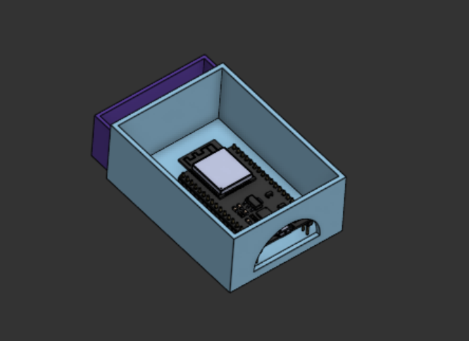
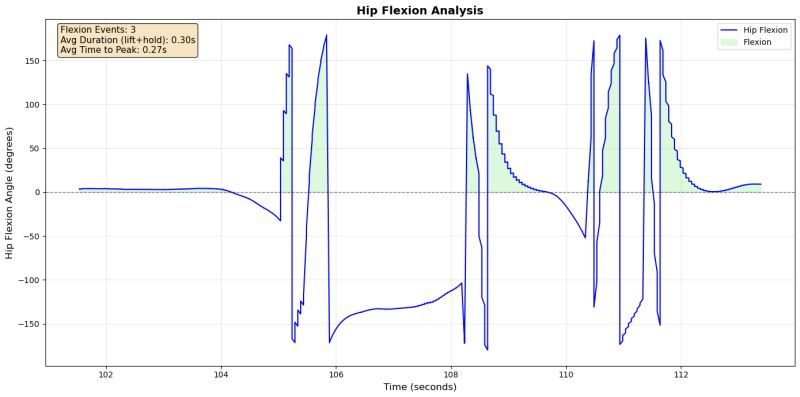

Personal Project
A proof-of-concept low-cost motion analysis tool. Using a pair of wireless sensor modules placed under the L4 vertebra and on either the left or right thigh to measure basic hip flexion and extension movements. The project provides the possibility for a completely modular and portable motion analyzer, usable in any environment, completely wireless and requiring just a computer to analyse results.

Assembled sensor module with 3D-printed housing

Initial CAD design of the sensor module

Sample Analysis of a hip flexion angle dataset